A free, open-source scanner for vibe-coded Node.js, Next.js, Supabase and Firebase projects. Drop your project folder on this page, or run it in a terminal: either way your code stays on your computer. You get a 0-100 score and a ready-to-paste prompt for your AI assistant for every fix.

Needs Node.js 18 or newer. Nothing is uploaded: the scan happens on your computer.
npx security-hub ui # opens a local page: pick a folder, click Scannpx security-hub scan . # or scan from the terminalnpx security-hub scan . --format prompt # one prompt to paste into Cursor / Claude / Copilotsecurity-hub ui — choose a folder, see the score, copy a fix prompt per finding. English, Russian, Kazakh.
Scans every pull request, comments on the lines your change touches, and can fail the check. See the repository README.
Each finding comes with a prompt: file, line, what is wrong, how to fix it. Secrets are never included.
29 rules, built around what actually goes wrong in AI-generated projects: Express, Next.js (with Server Actions), SvelteKit, Remix, Nuxt, tRPC and Hono, plus Supabase and Firebase.
Drop your project folder below. The same scanner as the command line runs inside this page, on your computer, and your code is not uploaded anywhere. You can also open a security-report.json (from security-hub scan . --format json --out security-report.json) or look at a sample.
node_modules and .git are skipped.